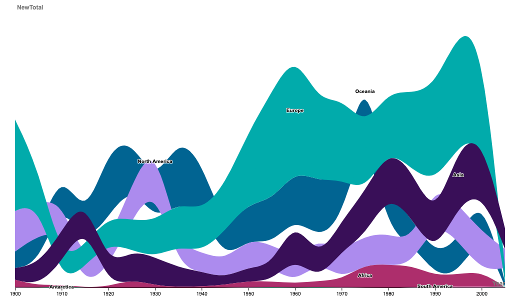
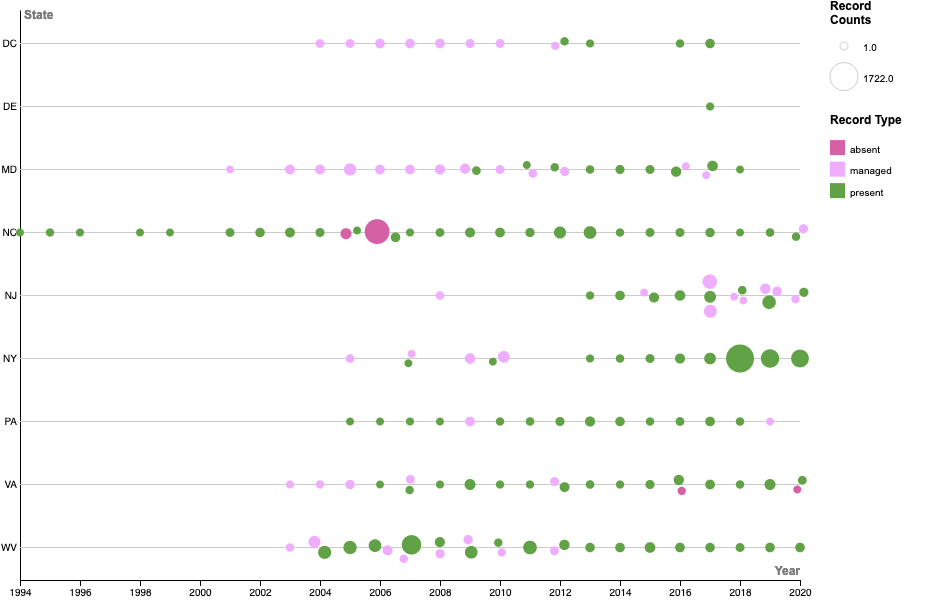

Figure 1. A treemap diagram illustrating the instrument families (as indicated by color and text labels) and number of musicians (as indicated by block size and text labels) for four orchestras. Data was sourced from RawGraphs.io.
Figure 2. A bumpchart diagram illustrating the number of new first records of alien species reported for each continent over time. A continent is represented by a distinct color and a text label. The bump height corresponds to the number of new first records of alien species for a particular time period. The data was sourced from Ariel Saffer.
Figure 3. A beeswarm diagram illustrating the sampling points recorded for the invasive Tree-of-Heaven (Ailanthus altissima; TOH) reported in the contiguous US over the past 30 years (1991-2021). TOH sampling points are mapped according to geography, time, and type in order to identify potential sampling biases in this dataset. Each series of data (represented on the y-axis) represents the samples recorded per state. Each point within a series represents the total number samples gathered at a distinct time annual step. The hue of point indicates the type of sample gathered at each time step (present/unmanaged, absent/unmanaged, or once present/managed). The size of the point corresponds to the total number of samples gathered for each time step. The dataset used to construct this diagram is sourced from EddMaps (https://www.eddmaps.org/).